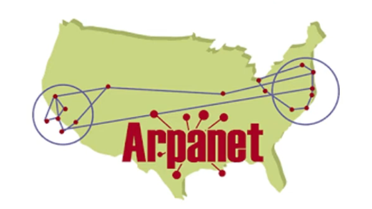
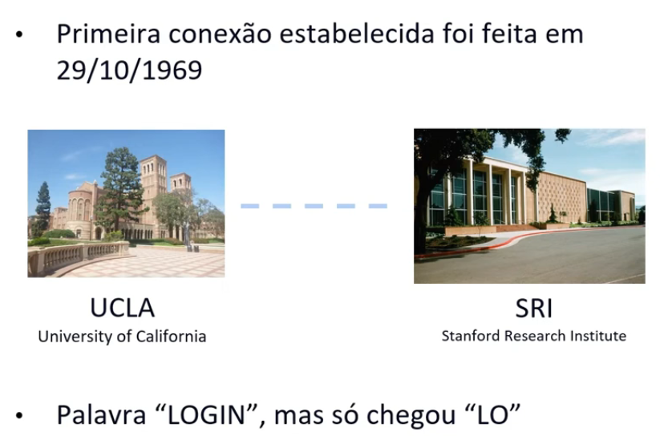
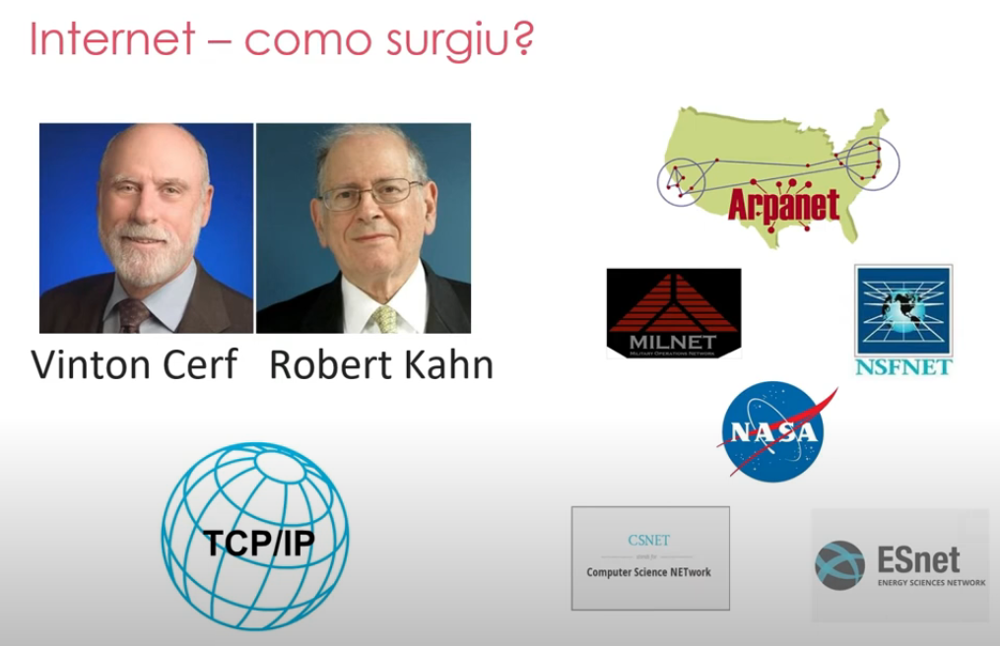

INSTRUÇÕES: Neste índice você deve colocar os tópicos que mais entendeu. Estes apenas são sugestões.
Primeira Geração: - ENIAC (1946).
Segunda Geração: - Mudança de Válvulas para Transistores (1959 a 1965).
Terceira Geração: - Circuito Integrado (1965 a 1970).
Quarta Geração: - Microprocessadores, Notebook, Macdosh, Mouse etc./i> (a partir de 1971).
Quinta Geração: - Inteligência Artificial, Computadores Quântico, Cripto-Moeda, Realidade Aumentada e Realidade Virtual. até o momento?.
Telégrafo 1958 primeira forma de comunicação foi feita com codigo Morse em cabos ligados de um continente a outro.
  Em 1989, Tim Berners-Lee criou a WWW usando o Hyper-text ou seja HTML criando assim o primeiro navegador fazendo.
A primeira maquina a ENIAC foi construído para fazer cálculos de balísticas para calcular rotas de mísseis nesse meio na onda da Guerra fria ficou em alta o desenvolvimento de várias tecnologias com a preocupação de auto defesa por estarem em guerra fez junção da ARPA (Pesquisa Avançada) para DARPA (Pesquisa Avançada para Autodefesa) DARPA funcionava em Sistema de comunicação em pacotes, enviando em múltiplos destinos por checkpoints para que o tráfego fosse fluído.
Grace Murray Hopper (1940-1950) - as primeiras Programadoras do projeto Harvard Mark ciando a linguagem Flow-Matic - base da criação futura Cobol, Ph.D em matématica tentou entrar na Marinha na Segunda Guerra mais não conseguiu então tentou na reserva, em 1944 trabalhou no projeto Mark escrevendo três artigos científicos. Em 1949 desenvoveu seu computador convertendo inglês para linguegem de máquina. É dito que ela que criou o termo bug por encontrar uma inseto que causadou um poblrma da máquina.
Joseph Carl Robnett Licklider (1915-1990) - Psicologo e Ciêntista da Computação considerado uma figura mais proeminentes da Compuação. Um dos primeiros a prever como o interligamento da computação seria como hoje e entendeu bem antes como a internet seria. Bacharelado com tripla especialização em física, matemática e psicologia 1938. Ph.D. em psicoacústica em 1942.Em 1957, ele recebeu o Prêmio Franklin V. Taylor da Sociedade de Psicólogos de Engenharia. Em outubro de 1962, Licklider virou Chefe da ARPA, fez um memorando descrevendo os desafios que a equipe enfretaria com o desenvolvimento em ultima sua análise levou a ARPAnet, a precursora da Internet atual.
Robert E. Kahn (1938-2022) - Primeiro a propor o Protocolo de Controle de Transmissão(TCP) e o Protocolo(IP) fundamentais para internet ganhando o Prêmio Turing em 2004. Graduado em engenharia elétrica pelo City College de Nova York, Mestrado na Universidade de Princeton. Ele entrou e fez uma demonstrou na ARPANET em que vários computadores conectados interligando informações e fez perceber que o TCP/IP era uma tecnologia real, ajudando assim a desenvolver o PROTOCOLO. Saiu da Darpa e fundou a Crporation for National Research
Tim Berners-Lee (1955) - Professor Físico e Cientista da Computação do MIT. Criou o WWW. Conseguiu em 25 de dezembro de 1990 com ajuda de colegas a implementar a primeira comunicação bem-sucedida entre um cliente HTTP e o servidor através da internet.
Nasceu em família de classe média, foi escoteiro quando novo entrou em Havard acertando 1590 de 1600 na nota da universidade, mas abandou o curso de matématica e direito no terceiro ano de curso para se dedicar a empresa que fundou com Paul Allen a microsoft. Aos 16 na empresa Taito como desenvlvdor de jogos, quando aos 17 Gates com Paul desenvolveu um software para leitura de fitas magnéticas, com informações de tráfego de veículos Construiu o primeiro "computador pessoal" foi o Kenbak em 1971, tinha 256 custando US$ 750, não possuia CPU, por esse motivo em 1980 a IBM lider do mercado de computadores grandes fechou contrato com a Microsoft. Como não tinha S.O. comprou quase pronto de um cara que desenvolviu por US$ 50 mil, personalizou e vendeu-o por US$ 8 milhões virando o MS-DOS. Sacanagem ou não mas isso é a vida dos négocios.
No final da década de 70, Jobs a seus parceiros Steve Wozniak e Mike Makkuta desenvolveram as primeiras linhas de computadores, percebendo o potêncial dos computadores, inovaram dando um item, muito popular mais tão difrencial para a época o mouse pad. Entre seus altos e baixos já foi demitido pela Apple fundou a NeXT vendou a empresa pela própria Apple Inc, retornando assim como CEO da Apple de 1997 até sua morte em 2011.
Conceitos de Client: O cliente é o qual consome onde o procesor é fazer uma requisição para o Protocolo HTTP onde esse protocolo faz uma solicitação ao Servidor para voltar ao HTTP e ir DIRETO ao cliente.
Hospedagem: Hospedamos nossos sites que fazemos no próprio Servidor entre milhares que existem no mundo, escolhemos aquele mais próximo devido a latência, preço, suporte e lembrando eles ficam 24horas ligados que é o idéial para atenter a todos (digo todos em horario variado, pois se quiser algo maior terá que ter um suporte de espaço maior).
Velocidade de Conexão: Para amenizar a velocidade de tráfego na internet eles elaborarão (já é antigo e já estão pensando em mudar) um sistema chamado Cache onde você navega pelos sites e eles pedem se você aceita ou não usa-los para armazenar os dados não no servidor mais no próprio sistema local o client, fazzendo assim boa parte do trafego carregar mais rápidos os sites pois já estão algumas partes salvadas pelo Cache.
Resoluções: Devido a tranformação da tecnologia vamos dizer rápida dos anos de 1990 a 2023 a tecnologia passou por vários processsos diminuindo assim em larga escala seus dispositivos dando a alguns a autonomia e facilidade em vários aspectos de uso, tanto que hoje você pode andar de celular de varios modelos e tamanhos que entra e sites, notebook de vários tamanhos e monitores tb sem contar as tvs Smarts devido a essa tamanha variações de telas torno-se necessária o uso da criação do termo "Responsividade" que trata em si o funcionamente da modificação do layout para o tamanho do dispositivo
Browser: São programas que executam arquivos, seguem o padrão W3C porém tem diferença. No inicio com o Mosaic depois para Netscape e hoje com ampla variedades. Cada navegador tem suas características onde pode ou não suporta determinada atualização do HTML, CSS e JS, chamamos isso de compatibilidade, mas pode ser coisa mínima em cada caso.
Sobre Servidores: Serve de apoio a outras maquinas da rede, não sendo só para internet sendo assim podendo ser também local. Maquinas mais sofisticadas para grandes processamento ou pequenos. Servidores em conjunto são colocados em locais chamados datacenters, onde varias ou só uma empresa usa.
Hardwares e Softwares em Servidores Fazemos uma requisição HTTP para um Servidor Web e ele processa e volta como HTML, CSS, JS, Img, Texto.
Tipos de Servidores
Server-Side: Estude pelo menos duas linguagem por motivos de segurança no mercado.
Client-Side: O JS é tanto Cliente e Servidor porque as empresas que fabricaram os navegadores, como a (google), manteve uma Engine debaixo do cliente, o mecanismo de leitura V8, que é um modulo Open-Source assim como no Servidor, ou seja o V8 é um mecanismo de execução do JavaScript tanto um Cliente como Servidor AMBOS. Onde JS no cliente roda pelo Browser enquanto no Servidor pelo Node.